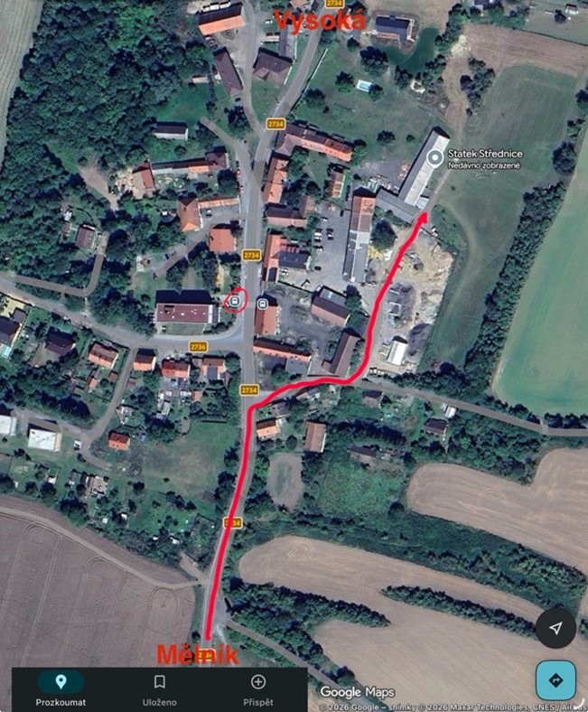

Čas obřadu
Čas obřadu je stanoven na 14:00, vyrazte raději s předstihem, ať o nic nepřijdete. Na Statku se bude někdo určitě pohybovat již od dopoledne.
Místo
Střednice 9, 277 24 Vysoká u Mělníka
Jedná se o otevřenou stodolu s velkou pastvinou, takže místa bude dost pro všechny.

Doprava
Kudy za námi?
🚗 Autem
Příjezd je možný přímo ke statku.
🚌 Autobusem
Autobus číslo 474, ve 12:22 ze zastávky Mělník, autobusové nádraží - příjezd do zastávky Vysoká, Střednice ve 12:40.
🚆 Vlakem
Vlak do Mělníka a poté autobus nebo naše taxi.
🚆 Vlakem pro dobrodruhy
Do Lhotky u Mělníka a pokračovat k nám lesem po zaniklé trati (4,5 km), kudy se dříve vozila řepa. Odjezd z Mělníka ve 12:08.
🚕 Taxi
Po celý den bude k dispozici náš osobní šofér, který bude pendlovat mezi Mělníkem a Statkem. Tento odvoz je pro info všechny pozvané hosty samozřejmě zdarma.
Kontakt na šoféra: JEŠTĚ NEVIM KDO
Ubytování
Pastvina u stodoly je dostatečně velká k postavení mnoha stanů (stany nezajišťujeme), aut, karavanů i autobusu. Zde je ubytování i parkování zdarma.
Pro komfortnější ubytování přikládáme odkazy s tipy na ubytování na Mělníku. Případně si můžete najít něco poblíž. Hradíte si sami.
Program
Po obřadu se můžete těšit na lidovou hudbu, vystoupení folklorních souborů, bohatý raut, jízdu na koni a oslíkovi Pepíkovi, tombolu, výuku tanců, venkovní i vnitřní aktivity a hry a večerní tradiční čepení nevěsty. Postaráno bude i o děti! V průběhu dne i večera se o zábavu postará náš DJ!
Dětský koutek: máte nápady nebo vybavení vhodné na aktivity pro děti? Kontaktujte naši kamarádku Adélku, která se bude starat o program pro vaše drahé ratolesti.
Adéla Kramná - tel.: 734173383 (preferuje kontakt přes whatsapp)
Jídlo a pití
K dispozici bude raut do vyjedení zásob. Sladké, slané i bez laktózy a vegetariánské. Pití: bude velký výběr nealkoholických nápojů, káva, čaj…
Z alkoholických nápojů budeme podávat pouze čepované pivo a víno.
Dress code
Naše oficiální svatba v úzkém rodinném kruhu již proběhla. Tuto druhou svatbu jsme pojali spíše jako oslavu našeho sňatku s našimi nejbližšími a přáteli.
Svatba bude napůl folklorní, pokud máte možnost a chcete, nevěsta uvítá na svatbě kroje/krojové součásti nebo folklorní doplňky. Není to však podmínkou.
Jelikož se nejedná o oficiální svatbu, oblečte se dle vaší libosti a představivosti, hlavně abyste se VY cítili dobře. Myslete však na to, že svatba bude ve stodole s nerovnou podlahou a na pastvině. Nedoporučujeme tedy podpatky.
Červnové večery mohou být ještě chladnější, raději si vezměte i něco teplého na večer.
Prstenové pravidlo
Přemýšlíte, jestli na svatbu přivést s sebou svého partnera, ikdyž nebyl pozvaný? Máme jednoduché pravidlo. Pokud nebyl pozvaný a jste zasnoubení nebo manželé, vezměte ho s sebou. Pokud není pozvaný a pouze spolu chodíte/žijete bez oddání, zeptejte se nevěsty nebo ženicha, zda ho s sebou můžete vzít. Preferujeme ale na svatbě pouze pozvané hosty z důvodu poplatku 100Kč./1os. pro majitele Statku.
Dary
Naši milí hosté, Vaše přítomnost na naší svatbě je pro nás tím největším darem. Pokud byste nás přesto chtěli obdarovat, budeme vděční za finanční příspěvek. Děkujeme!
1559521004 / 5500
Pokud byste nám rádi pomohli raději prakticky než finančně, budeme rádi za nějaké dobroty, které připravíte na náš raut. Abychom měli pestré občerstvení, přikládáme odkaz na google tabulky, kde se můžete podívat, co už někdo chystá a vyplnit, co byste rádi přichystali vy. Moc vám děkujeme!
Upozornění: tabulky jdou vyplnit bez problémů na PC. Na mobilu lze vyplnit pouze s aplikací google sheets (tabulky). V případě nouze napište nevěstě.
Fotografie a videa
Budeme moc rádi, pokud s námi budete sdílet vaše zážitky ze svatby (i z cesty na svatbu). Označujte nás na vašich stories nebo příspěvcích na Instagramu @vareckovi.